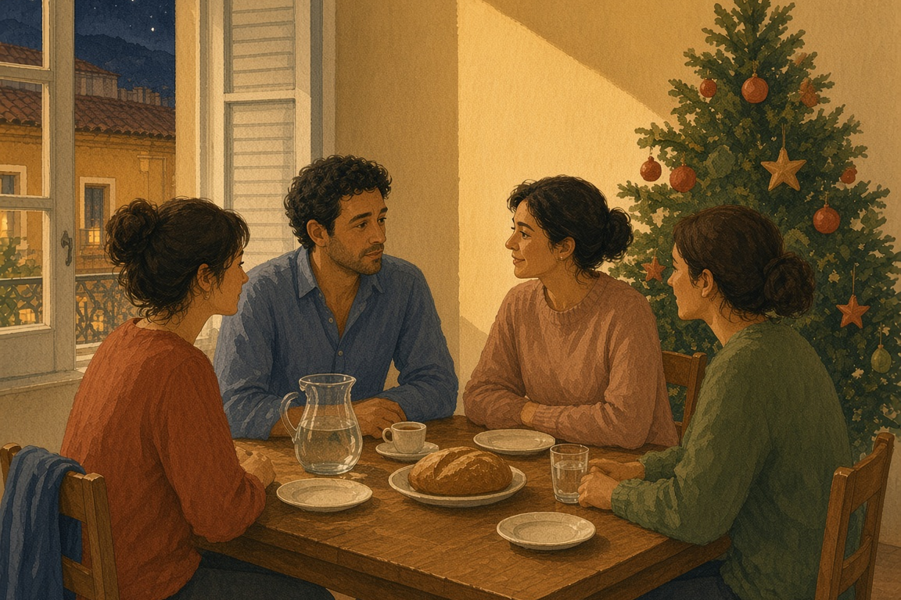
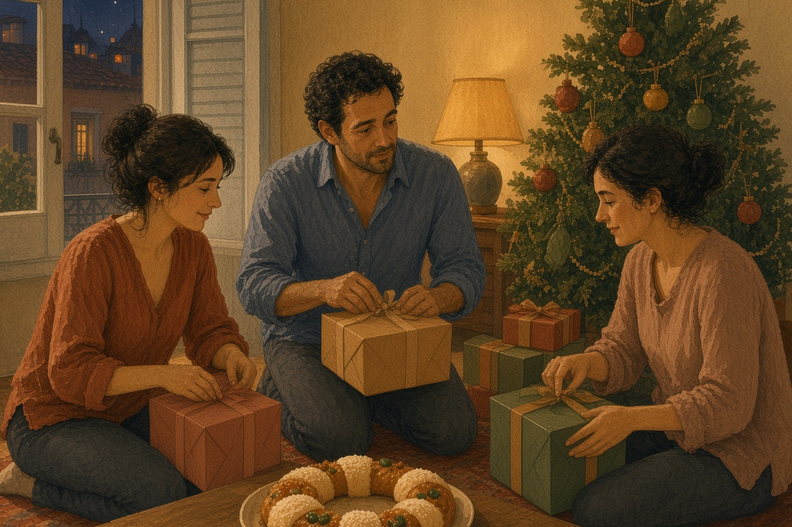

- A2
- La Navidad
Regalos en Nochebuena, o el 6 de enero
En Quito la fiesta grande es el 24; en otras casas, algunos regalos esperan al 6 de enero.
Texto
El 24 de diciembre fui a casa de mi primo, en Quito. Esa noche es la Nochebuena. La familia se sentó a la mesa, comimos juntos y hablamos mucho. A las doce, abrimos los regalos debajo del árbol. En mi país, muchas personas abren los regalos el 25, por la mañana. Allí me sorprendió: la fiesta grande es el 24, no el 25.
Mi amiga Elena, de México, me explicó otra costumbre. En su familia también hay cena de Nochebuena. Pero algunos regalos llegan el 6 de enero, el Día de Reyes. Ese día recuerdan a Melchor, Gaspar y Baltasar. En México, y también en Ecuador, mucha gente comparte una rosca de Reyes. En Ecuador, los regalos principales son de Nochebuena; el 6 de enero, la rosca junta otra vez a la familia.
Ahora entiendo: no hay un solo día para los regalos en el mundo hispano. El 24 es la noche de la mesa. El 25, en muchos lugares, es más tranquilo. El 6 de enero cierra la fiesta. El año que viene voy a estar otra vez en Quito el 24. Voy a quedarme a la mesa hasta las doce. Y el 6 de enero voy a buscar una rosca. No es la misma fecha que en mi país, pero es la misma idea: estar con la familia.
